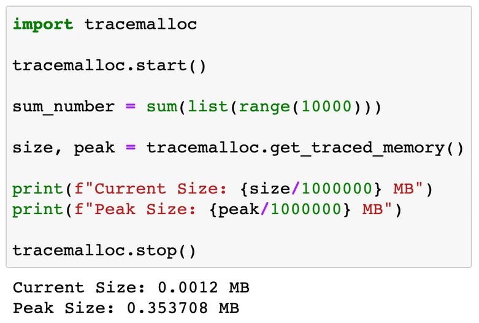
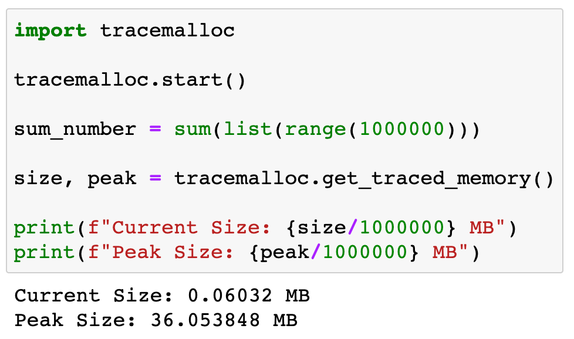
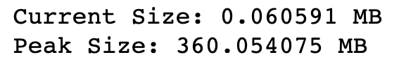
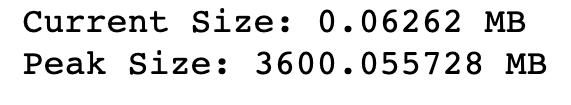

Tips on memory management#
Since everyone will be using the same cluster, it is important to be mindful of how to reserve resources in job submission.
This is especially important because this cluster machine is also being used for research purposes for PhD students and faculty members.
Tracing memory allocation#
We will see how much memory some of the basic tasks in Python take by using the tracemalloc (trace memory allocation) library.
Let us try to add some numbers and see how much memory it takes.
Adding Numbers
1 to 10,000
1 to 1,000,000
1 to 10,000,000
1 to 100,000,000

Warning
Bad Manner to do big computation in ds01.
Practice 13#
Check the memory usage of your combining_files.ipynb. Check also the memory usage of reading the
test_file.gz from /home/practice_data/.
Provide a screenshot of the code with result.
Rule of thumb#
While using Jupyter Notebook is convenient, everyone will be running it on the login node (ds01).
If the cell runs more than 30 seconds, stop it, and submit it as job that runs a .py file to the cluster.
Reserving memory in virtual machine#
If the memory you reserve is not enough, the job will fail.
Add 1-2 GB at a time if it is still not working.
If you think you will need more than 20GB, ask the instructors first.